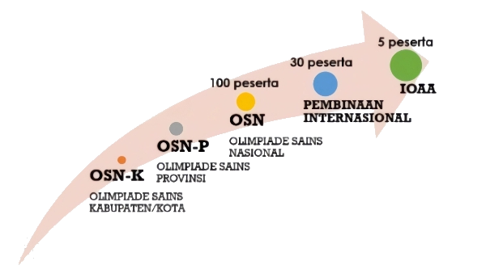

Ringkasan topik
-
OSN-K Astronomi

Penjelasan ringkas fitur aplikasi OSN-K Astronomi
- Hanya dapat diikuti oleh siswa SMA NEGERI 2 BATANG yang telah terdaftar sebagai peserta OSN-K Bidang Astronomi tahun .
- Masuk ke aplikasi OSN-K menggunakan User-ID dan Password yang telah ditentukan.
- Pastikan tersedia jaringan listrik dan Internet yang stabil dan memadai selama tes.
- Disediakan penanda hitung mundur waktu di setiap laman sesi tes. Segera kerjakan tes setelah tanda waktu muncul atau dimulai. Waktu yang disediakan sudah termasuk waktu untuk menekan tombol pengiriman jawaban.
Jadwal-jadwal penting untuk OSN-K Astronomi
1. Pendaftaran OSN-K - 2. Ujicoba OSN-K Astronomi - mulai pukul 08:00 WIB/09:00 WITA/10:00 WIT 3. OSN-K Astronomi - pukul 08:00-10:00 WIB/09:00-11:00 WITA/10:00-12:00 WIT
DILARANG:
- Menggunakan kalkulator saintifik yang dilengkapi dengan fitur grafik.
- Membawa gadget ke dalam meja/ruang ujian.
(Not A Very) Short Q&A
- Tes OSN-K berapa lama?
2 jam (120 menit) - Kalau ujicoba OSN-K 2 jam juga?
Ujicoba OSN-K DIBATASI waktunya selama 2 jam dan dimulai pukul 08:00 WIB/09:00 WITA/10:00 WIT. - Jenis soalnya apa saja?
Pilihan Ganda dan Pilihan Ganda Kompleks - Pilihan ganda yang hanya punya satu jawaban yang benar saja?
Ada soal dengan jenis Pilihan Ganda Biasa (memilih satu saja jawaban yang benar), ada juga Pilihan Ganda Kompleks (dapat memilih lebih dari satu jawaban yang benar) - Kalau begitu, memilih semua jawaban di soal Pilihan Ganda Kompleks strategi bagus ya?
TIDAK JUGA. Pilihan(-pilihan) jawaban yang benar telah diberi bobot angka positif, sedangkan pilihan(-pilihan) jawaban yang salah telah diberi bobot angka negatif, dan total jumlah bobot di soal tersebut adalah NOL. - Boleh bawa/menggunakan kalkulator?
Kalkulator fisik boleh dibawa ke meja tes. Kalkulator yang dimaksud adalah kalkulator saintifik tanpa fitur grafik. - Boleh bawa alat tulis dan kertas untuk coretan/hitungan?
Alat tulis baku (bukan gadget) boleh dibawa ke tempat tes. Kertas yang semua halamannya masih bersih/kosong dari tulisan juga boleh dibawa ke tempat tes. - Boleh memakai dan menyimpan gadget di meja tempat tes?
TIDAK. Matikan fungsi gadget dengan menekan tombol power padanya. Simpan di dalam tas, amankan atau titipkan di tempat yang tersedia, atau ke pengawas tes/panitia di tempat tes. Gadget yang boleh dan bahkan HARUS disiapkan adalah gadget berkamera yang digunakan untuk pengawasan tes (proctoring). - Boleh bawa dan buka buku di tempat tes?
TIDAK. Tes bersifat CLOSED BOOK (tutup buku) - Apakah ada soal dalam bahasa Inggris?
Mungkin ada.
-
DATA dan KONSTANTA Astronomi dalam format PDF untuk kebutuhan pengerjaan tes OSN. File ini dapat dibuka dengan software/aplikasi standar selama laman ini dapat diakses sehingga mungkin saja tidak perlu dicetak/print.